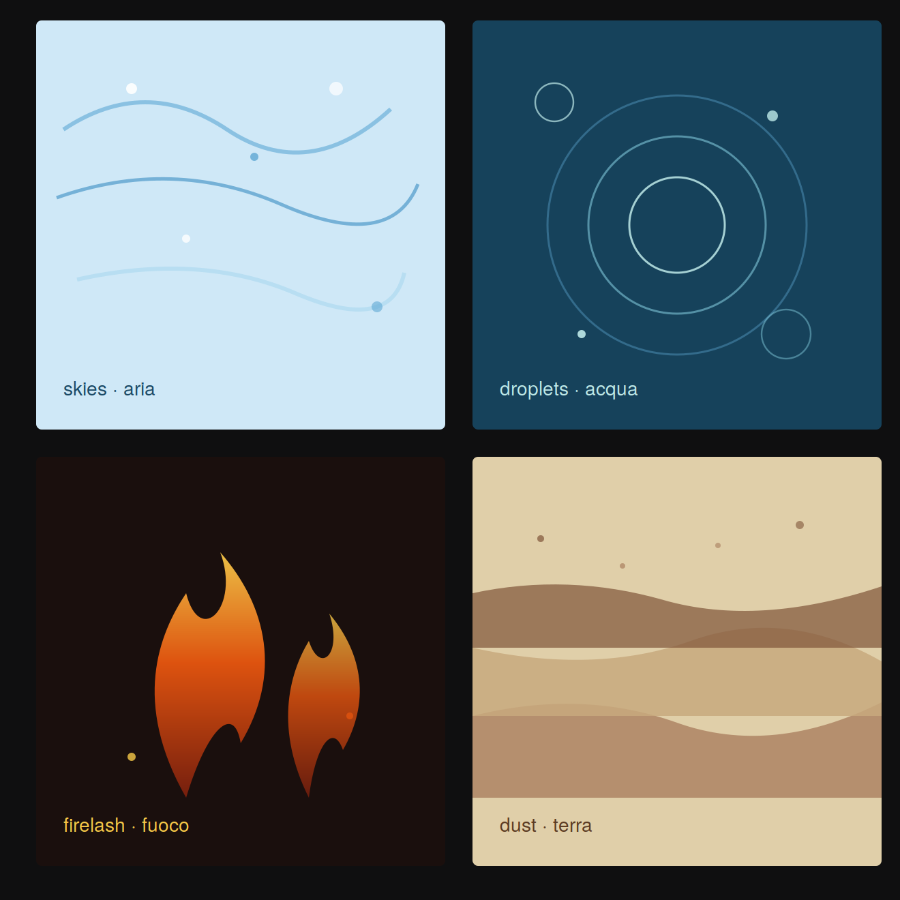
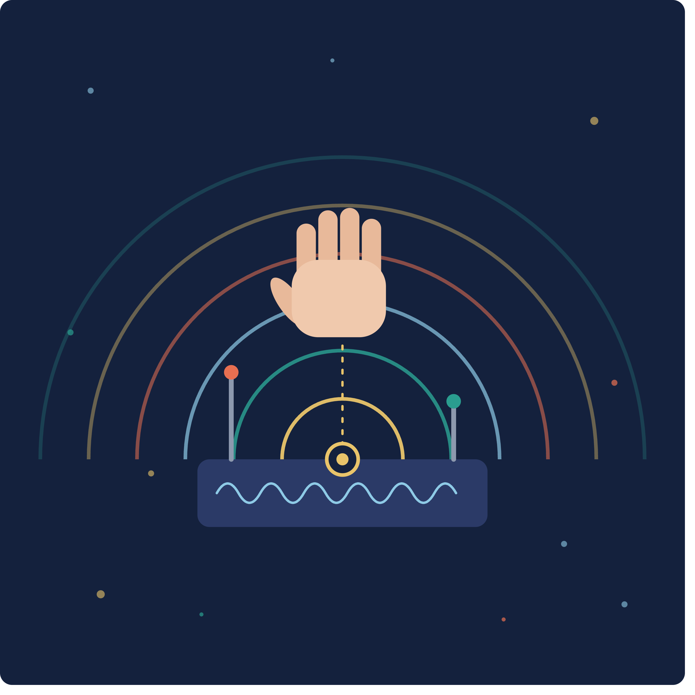
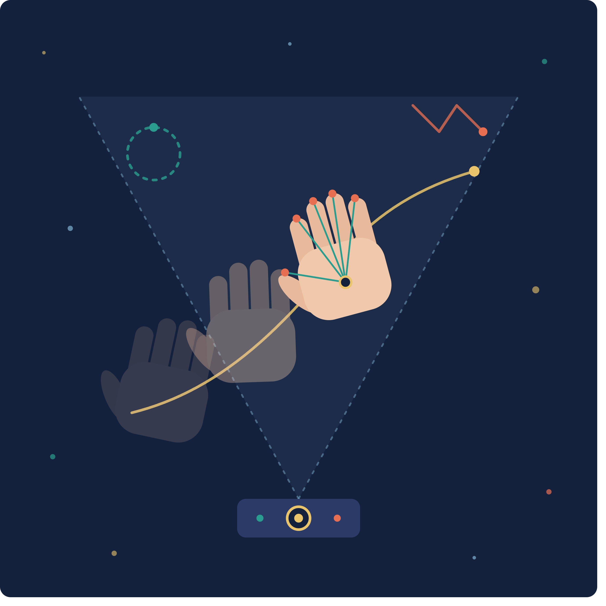

The Handscapes Project
Handscapes is an ecosystem of gestures, sounds, bodies, and spaces. Emerging from the encounter between artistic research and technological innovation, it explores how movement can become a source of musical expression and shared experience. Across rehabilitation settings, interactive installations, and material environments, Handscapes creates opportunities for people to shape sound through the simple act of moving. By reimagining the relationship between body and technology, the ecosystem opens new pathways for creativity, participation, and wellbeing, transforming interaction into a deeply embodied and meaningful experience.

Materials
This section contains Elements, a series of immersive interactive environments in which bodily movement gives shape to four sonic worlds inspired by the elemental forces of Earth, Water, Air, and Fire.

Sound Exploration
This is a space for listening through movement. Here, gestures become pathways into evolving sonic landscapes, inviting participants to discover, shape, and inhabit sound in unexpected ways. Through experimental interfaces and interactive environments, Handscapes Sound Exploration fosters open-ended encounters where exploration, play, and creativity become central modes of musical experience.

Gestures
This section explores the expressive potential of simple hand movements as direct sonic actions. By recognizing specific gestures, the systems transform intentional bodily actions into immediate musical events, creating an intuitive bridge between movement and sound.

Rehabilitation
Handscapes Rehabilitation investigates how gesture-controlled musical environments can support rehabilitation and wellbeing. By transforming movement into sound, it creates engaging experiences that encourage participation, motivation, and expression while addressing motor, cognitive, and emotional needs.